Vault7: CIA Hacking Tools Revealed
Navigation: » Latest version
Owner: User #1179751
Margarita v1.6 User Guide
Engineering Development Group
Margarita v1.3
User Guide
Rev. A
29 Nov 2011
Classified By: 2259322
Derived From: COL S-06
Reason: 1.4 (c)
Declassify on: 20350629*Change Log*
Doc |
Doc |
Rev |
Change Description |
Reference |
Authority/ |
|---|---|---|---|---|---|
New |
01-24-11 |
VGY |
New |
|
|
V1.1 |
02-25-11 |
VGY |
Updates for version 1.1 |
|
|
V1.2 |
06-02-11 |
VGY |
Updates for version 1.2 |
|
|
V1.3 |
11-29-11 |
VGY |
Updates for version 1.3 |
|
|
V1.6 |
03-24-2013 |
SDP |
Updates for version 1.6 |
|
|
|
|
|
|
|
|
Table of Contents
(U) Scope
(U) This document establishes the User Guide for Margarita v1.6.
(U) System Overview and Description
(S) The BARTENDER program is a set of IOCInformation Operation Center tools and concepts of operations that are specifically tailored for "blended" operations and rely on social engineering as well as technical sophistication for success. Tools for BARTENDER operations will be highly configurable, produce standardized results, will not require HQS interaction for deployment in most cases, and will not leave significant artifacts on the target computer.
(S) The BARTENDER program will use a common interface to configure the survey and will produce a common result regardless of the exploitation vector. The platform will be easy to use but also allow advanced users to detail robust surveys. The survey platform will include all features from EZCheese 5.0. Results of surveys will be stored on the same device that the survey was launched from and will be hidden and/or protected in order to allow the NOC freedom of movement.
(S) BARTENDER will also have a suite of tools that launch from a thumb drive and require the NOC to engineer a circumstance to view particular files. BARTENDER tools may trigger pop up messages from operations systems and personal security products. These messages will be part o the concept of operations. The NOC will be trained to expect them, allay the fears of the target, and guide the target to allow the survey to function.
(U) Assumptions and Constraints
(S) As mentioned above, in order for Margarita to collect files the NOC will be required to have some interaction with the target computer. Depending on the execution vector this may result in pop up messages.
(S) Margarita requires .Net 4.5 on the computer that does the configuration.
(U) Applicable Documents
(S) The following documents pertain to this tool. In the event of a conflict between the documents referenced below, the contents of this document will be considered binding.
- Margarita v1.6 User Guide.doc (S)
- Margarita v1.6 TDR.ppt (S)
(U) System Description
(U) System Concepts and Capabilities
- (S) The Margarita configures an executable that will be used to perform a survey and/or do file collection.
Prerequisites
- (S) (S) Margarita requires .Net 4.5 on the configuration computer.
(U) Operation
(U) Installation and Setup
- (S) The Margarita v1.6 GUIGraphical User Interface configures various parameters of the survey and file collection. Various environment variables (such as %temp%) can be used in collection and output fields. Additionally, where output is being written, three additional variables are recognized that can be used to direct multiple surveys and collection to the same location:
- %GUID% - a unique id string, changed for every launch
- %ft% - a hex string derived from the current time
- %st% - a readable time/date string
- %drive% - the drive letter of the flash drive (Ex: F:)
(U) Preparing a Margarita
(U) Initial Setup
(S) Prior to use, a license key needs to be generated. In the Admin folder is a program called licencesgen.exe. Run this program and create a key with a valid start and end date. In addition to the start and end date, it should be decided if the payload tab should be shown. Once license.txt has be generated, but that file in the same folder as MargaritaWizard.exe
(S) The following instructions provide information on how to configure the Margarita tool in the Station by a NOC.
(U) Double-click on MargaritaWizard.exe. The following user interface will appear:
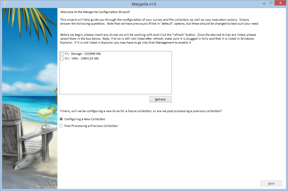
Figure 1: (S) Margarita v1.6 – Main Tab
(S) The interface will guide the user through the necessary configuration steps, and is laid out in a way that the user must click through all the pages before configuring the drive.
(S) The first tab (seen above) is the main tab. This tab allows the user to select the device or devices that they wish to configure, or post process (covered later). On this tab simply select one or more of the drives listed and hit next. If the device you wish to use isn't listed, ensure it is plugged in and hit refresh.
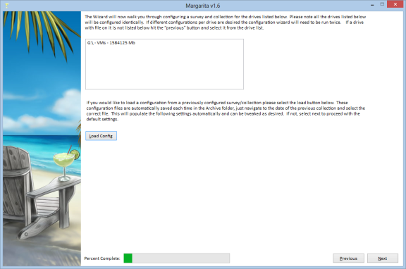
Figure 2: (S) Margarita v1.6 – Verification Tab
(S) The next tab, verifies the drives selected previously to ensure that the user has selected the proper device.
(S) Furthermore, if the user desires to load a configuration that had been created previously the "Load Config" button can be selected. If this is selected the subsequent boxes will be populated with data from the previous configuration. The user will still be required to click through all this information, and can make any necessary changes.
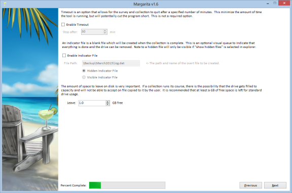
Figure 3: (S) Margarita v1.6 – Time out / indicator file / space to leave free
(S) The next tab covers three options, the time out, indicator file, and space to leave free.
(S) If desired, the user can select an applicable timeout. This timeout will ensure that the survey and file collection will not run longer than the specified time. Note, that if the timeout is hit, any file collection of survey data not collected will not be written to disk, and the program will just end.
(S) If a visual file indicating the successful and full completion of the survey and file collection is desired and indicator file can be requested. This file will be a zero byte file created in the case of the all files and survey data being successfully collected. Note, if the timeout is hit, a log file will not be created.
(S) Space to leave free is a required number, and must be set. This ensure that the thumb drive doesn't become unusable for overt functions. This value is the amount of space that will remain available for overt use, and must be at least 0.1 GB. In addition, the amount of space available for file collection and survey data (i.e. total size – space to leave free) must be greater than 1 GB. Drives not large enough to support this, are no longer supported.
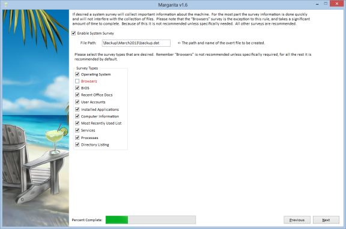
Figure 4: (S) Survey Tab
(S) The next tab is for Survey options. Clicking the Enable survey options checkbox will enable the screen. Below the "Enable Survey Options" checkbox is a field to specify the survey output directory. The survey output directory will be the location where the collection program will save the survey information. If the output directory is intended for the USBUniversal Serial Bus drive, begin the path with a backslash. For example: \surveyOutput\surveydata.dat. Note: If a drive letter is included, the application will attempt to write the survey results to the exact path provided - it will not adjust to the drive letter of the USBUniversal Serial Bus drive on the target machine.
(S)Now the user can select specific survey options to run on the target. The first section is a set of canned Windows Management Instrumentation queries.
(S)Note that the Browser survey collects information on Internet Explorer, Firefox, Chrome, Safari, and Opera such as bookmarks and history. This option can be slow.
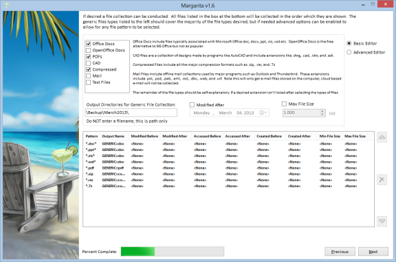
Figure 5: (S) File Collection Tab
(S) The third tab allows for configurable File Collection. Again, the user must check the Enable file pattern collection check box to enable the screen. For each file pattern entered, collection criteria is created and saved as a row in the collection priorities table. Wildcards may be used in the file pattern field. For example, a file pattern of *.doc will collect all Microsoft Word docs off of all fixed drives in the system. A file pattern of C:*.doc will collect all Microsoft Word docs off of the C drive. Note that 2007 Office docs have an x on the extension, so to include all 2007 Word docs search with C:*.docx or C:*.doc. To search for specific files, enter the entire path to the file: *C:\Program Files\sample.txt.
(S) To enable the date controls and the min/max file size fields, the appropriate check boxes must be selected. Also for each file pattern, an output filename must be specified. This should be the full path to the file on the USBUniversal Serial Bus drive, minus the drive letter (i.e. it should always start with a backslash such as "\output\outputFile.dat").
(S) Under the "Advanced Editor" clicking the new button will add a row to the table on the lower part of the screen. To add additional file patterns with different collection criteria, change the entries in the Collection Criteria area of the screen. "Copy" will make a copy of the highlighted row and select it for editing.
(S) Entries may be moved up and down within the table by clicking on the row of interest to move (it will be highlighted once it is selected), and then clicking the Up and Down buttons until the row is in the desired position. Note that collection will occur based on the priority of entries in the table, with the highest priority collection set starting at the top. Each collection set will run individually. So the application will run through the list starting at the beginning of the table. Once all files in the first collection set have been saved, it will move to the next row of the table and so on, until the USBUniversal Serial Bus drive is filled to the limit.
(S) To delete a row in the table, click on a row, (again it will be highlighted when selected), and then hit the Delete Row button or the red "X" on the side of the table.
(S) There are checkboxes on the "File Collection" tab to make configuration easier. Selecting any of the checkboxes will configure Margarita to collect the files listed to the right of the checkbox. These files will be put in the folder that you type in the box below the checkboxes. So if you specify "\Backup\MonthYear\" and the Office Docs and Mail checkboxes, Margarita will save the files collected to \Backup\MonthYear\doc and \Backup\MonthYear\mail respectively.
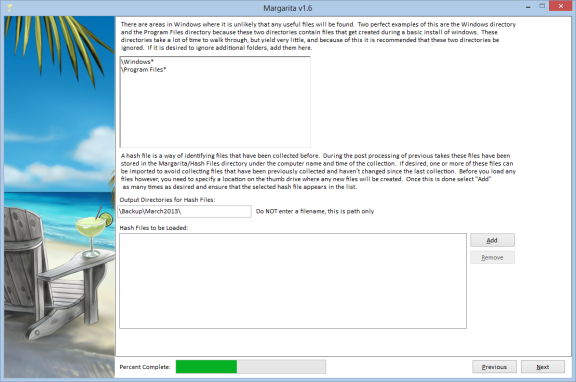
Figure 6: (S) Additional collection details
(S) The next tab covers areas where you want Margarita to NOT collect files. These directories are relative to each drive, so do not give a drive letter. The paths allow wild cards, so you can specify \Windows\ and Margarita will not collect from Windows, or you could specify \Program Files* and on a 64-bit system Margarita would skip both \Program Files\ and Program Files (x86)\. Margarita will still do a directory listing of the folders that are ignored.
(S) In addition, a previous hashfile can be loaded. During execution the file collection piece creates a hash of any files collected. This enables the drive to not collect files that were previously collected on subsequent runs. During post processing these files are collected and saved. If desired, the user can load a file from a previous collection to protect against duplication of work.
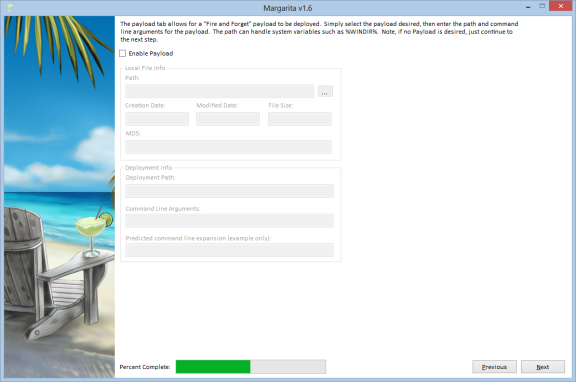
Figure 7: (S) Payload
(S) The fourth tab, Payload, allows the user to specify a payload to drop on the target machine: See Figure 4. To select a payload click on the "…" button. A folder dialog will appear. Simply browse to the location of the payload file, and then click Open. The path to the payload may also be manually entered in the text box located to the right of the Find Payload button. Any arguments used when launching the payload should be entered in the Payload Arguments text field. For example, if ipconfig is used as a payload it takes command line arguments such as /all. So at the command line a user would type:
ipconfig /all
(S) To include command line arguments using Margarita v1.0, only the arguments are needed, so the user would enter only /all in the Payload Arguments text field.
(S) Only one path is needed on the target machine: the fully qualified path to the location where Margarita should drop the payload.
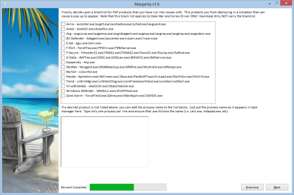
Figure 8: (S) Blacklist Tab
(S) The Blacklist tab allows for a quick bailout if a targeted process is present. While the program will still execute, it will quickly exit, thus hopefully avoiding any pop up alerts. We tried to include all the major AVAnti-Virus vendors, and if selected all the listed processes will be added to the blacklist. If any additional items are desired they can be added in the bottom box on the tab.
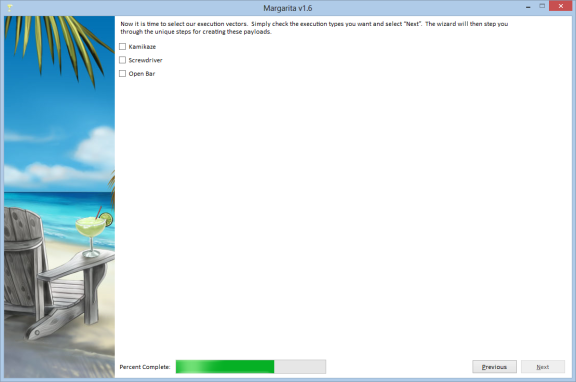
Figure 9: (S) Execution Vector Tab
(S) The execution vectors tab allows the user to specify an execution vectors for Margarita.
(S) Kamikaze is a configured binary that isn't meant to be used with a cover application. This executable would be used in a situation where you are not under scrutiny and can just browse to the USBUniversal Serial Bus drive and double click on the file. In the "execution path" box enter the full path for the executable, starting with the drive letter. For example, to put the file directly on the USBUniversal Serial Bus drive, you might use E:\MargaritaPath\files\Margarita.exe. The filename can be anything as long as it has a .exe extension.
(S) ScrewDriver is an encryption program called UPE that is similar to WinZip or WinRAR. When files with specially configured names are added to the archive they will be automatically executed when the archive is opened. See the ScrewDriver Guide for more details.
(S) Openbar is an ability to Trojan most publically available executable. See the Openbar User's Guide for more details.
(S) ScrewDriver and Openbar can drop and run Margarita from different locations. In the "execution path" box enter the directory on the USBUniversal Serial Bus where you want to run Margarita, starting with a backslash, not the drive letter. For example, \MargaritaPath\files\Margarita.exe. The filename can be anything as long as it has a .exe extension.
(U) Additional Notes
(S) Shortcut variables may also be used in the path names for the target entries and the file patterns. For example, %temp%\dir1\dir2\payload.exe would be expanded as a payload executable directory. Three additional environment variables are expanded if entered on the GUIGraphical User Interface for the "Survey output filename" and the "Specify output file" fields, as follows:
- %GUID% - adds a GUIDGlobally Unique Identifier in the filepath
- %ft% - adds the filetime to the filepath
- %st% - adds the systemtime to the filepath
(S) So an example entry would be:
- \Windows\System32%GUID%
(S) The GUIGraphical User Interface now allows for a user to save and/or load configuration files. The user must simply navigate to the file menu and select either "Load Configuration" or "Save Configuration" based on the action desired. The file menu also allows for individual tabs to be cleared, if necessary.
(U) Application Configuration
(S) Once all desired collection sets are in the table, and the exploit parameters are set, the user must navigate to the file menu, then select Configure Exploit, to configure the tool. The application now forces the user to save a configuration file before proceeding. Once configured, the tool will create the configured executable(s). If an execution vector has been selected the file will be created in the same directory as the executable specified in the Main tab.
(S) Initiating a Session on the Target System
(S) Margarita will be executed on the target system via the NOC's execution vector of choice. If no execution vector was chosen in the Execution Vector tab, Margarita will still output a basic, configured executable using the filename supplied in the Main tab. This file could be double clicked on the target computer to run the survey.
(S) IMPORTANT: The collection process may take several minutes. If the drive is removed from the system before the collection completes, some survey/collection data may not be written to the thumb drive. The user should allow the tool to complete the survey/collection and stop activity to the thumb drive. There is no other visible indication that the process is finished.
(U) Stopping and Suspending Work
(S) The Margarita tool cannot be stopped once it is initiated. If the drive is removed while the tool is still running, it will terminate gracefully but only complete a partial collection.
(U) Assistance and Problem Reporting
(S) Please contact EDG/AED/OSB for assistance.
(U) Additional Operational Procedures
(U) Post Processing
(S) The following guidelines should be used to post process any survey/collection results from the Margarita tool:
- (S) Plug the target thumb drive into an appropriately classified, controlled computer. Note the letter assigned to the drive.
- (S) Double click on MargaritaWizard.
- (S) Click "Post Process!" and select "Next".
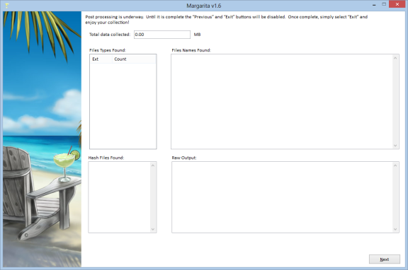
Figure 10. Rehab post processing tool
(S) The collected data will be extracted to the current directory. The system information will be extracted and sent to Internet Explorer to display. (Note: often, the information collected contains data that invalidates the XML, so another XMLExtensible Markup Language viewer such as Firefox may be desired). The following directories and files will be created:
- Directory Listing.txt
- SysInfo.xsl
- Arp Table.txt
- Routing Table.txt
- IP config.txt
- Firefox information:
- FirefoxBookmarks*
- bookmarks.html
- cookies.txt
- places.sqlite
- Firefox Cookies.txt
- Firefox History.txt
- Internet Explorer information:
- IECookies*
- IEFavorites*
- IE History.txt
(U) Viewing the results
(S) The DirectoryListProcessor can be used to view the dirlist.txt files created by Rehab. This will give you a Windows Explorer type view of the directory list.
(S) To run the tool, click "File" at the top of the screen and select "Open". Browse to the dirlist.txt file created by Rehab and open it. After a few minutes you will see a the directory list in an explorer type view.
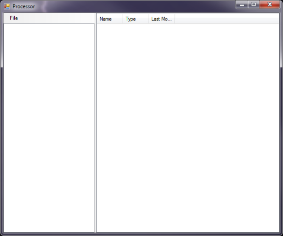
Figure 6. Initial view
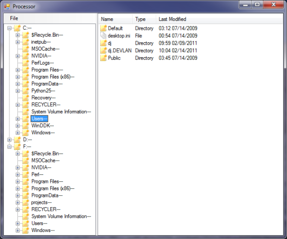
Figure 7. DirectoryListProcessor
(U) Release Notes
(U) Updates from previous v1.2 to v1.3
- Fixed a bug that caused the generic collection to happen before specific file collection.
- Added Martini compatability.
- Added MS Office and MRUMost Recently Used registry entries to the survey.
- Removed the requirement that you specify a logging file.
- Added error checking on output filenames.
- Fixed a bug that didn't save filetimes on the target system when post-processing.
- Fixed a bug that changed the file access time on files collected on XPWindows operating system (Version) machines.
- Moved the default location of configured ScrewDriver and Martini files to subfolders "ScrewDriver" and "Martini".
- Fixed a bug in Kamikaze creation. If the path to the specified Kamikaze file didn't exist v1.2 would crash. Now it tries to create the path.
(U) Updates from previous v1.2 to v1.3
- Added the "Do Not Walk" functionality to skip collecting files from specified directories.
- Added a dialog box for choosing the Kamikaze output.
- Rearranged text boxes so they lined up better.
- Added "Generic File Collection" capability.
- Added "Next" and "Back" buttons for navigating the configation.
- Added ability to re-prioritize the file collection table.
- Added ability to edit the file collection table in-place.
- Added the ability to create a file showing collection finished.
(U) Updates from previous v1.0 to v1.1
- Fixed a bug causing crashes during post-processing Browser data
- Fixed a bug in the Internet Explorer history collection
- Added code to avoid Kaspersky alerting on out of the box settings
- Fixed some dialog in the tool tips.
- Moved the executable path from the main tab to "Kamkaze" under the execution vectors
- Moved the survey output text box to be closer to where the file output text box is on the file collection tab
- Added the DirectoryListProcessing tool.
(U) Known PSPPersonal Security Product (Anti-Virus) issues
- Kasperksy will pop yellow dialog boxes if it has been configured with high detection settings.
- If collecting *.evt files (event log files) Margarita does not collect all the files.